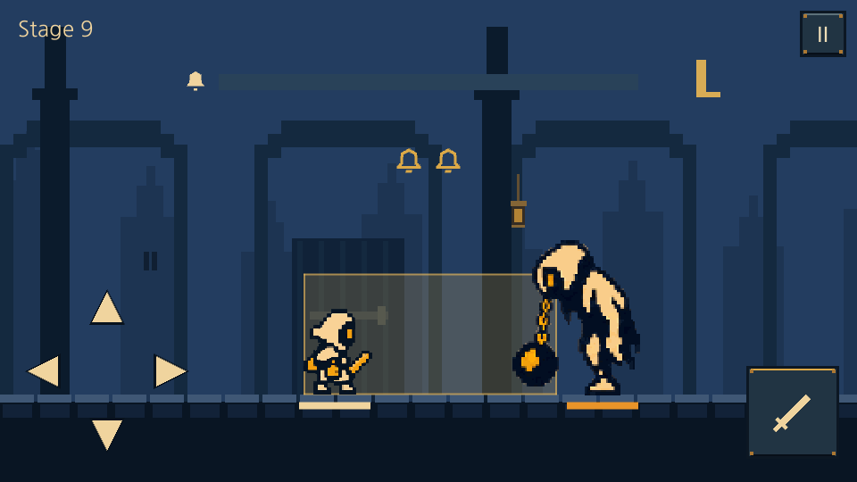
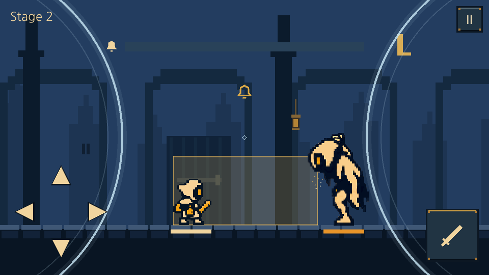
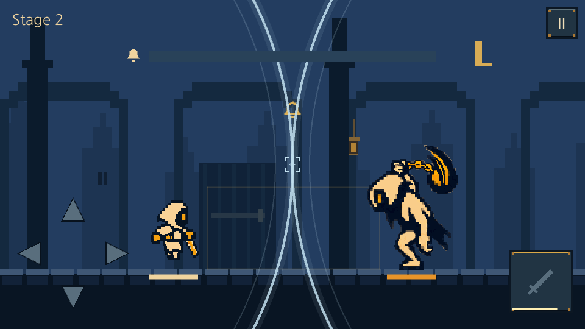
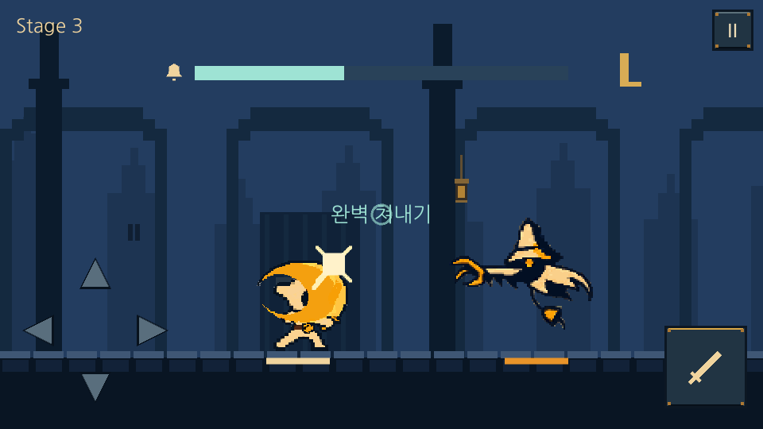
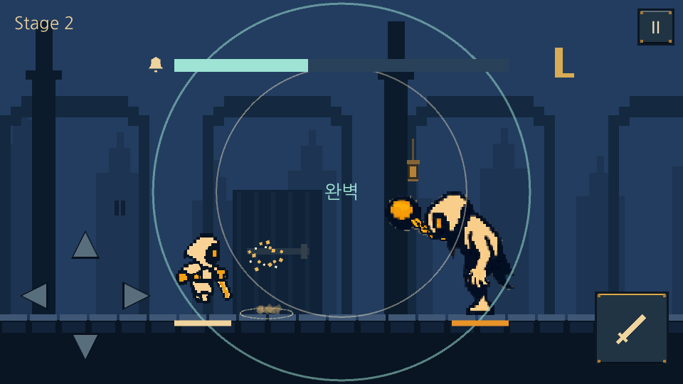
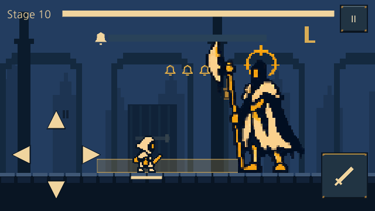
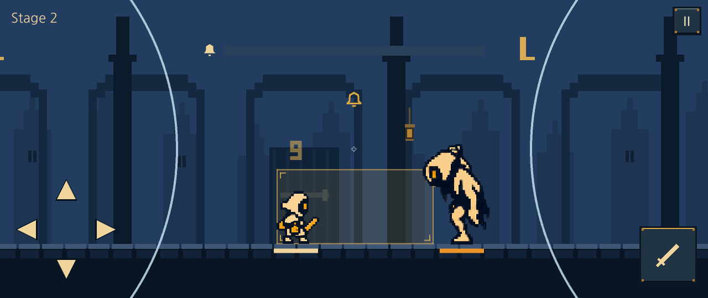

LAST BELL · 실제 Unity Windows 캡처 · v5.9.1
720ms 접촉과 상단 쳐내기
실제 게임에서 확인
수정 미리보기 · 기획/적용 명세 · 검증 기록 · 게임 실행 파일
네 방향키 또는 WASD로 회피합니다. 아래 방향은 제자리 검 쳐내기 모션이며 공격 버튼·Space는 일반 공격/반격입니다.
앞·뒤 연속 회피 → 반격
앞0·240·480 / 뒤720·960·1200ms 예고,1440·1920ms 타격. 실제 게임 화면을20ms 간격으로 캡처했습니다.

기본 단발 · 정확히720ms






Windows 자동 입력·카메라 렌더 검증입니다. 사용자 손의 체감 난도와 실제 Android 기기 터치/성능 검증은 포함하지 않습니다.